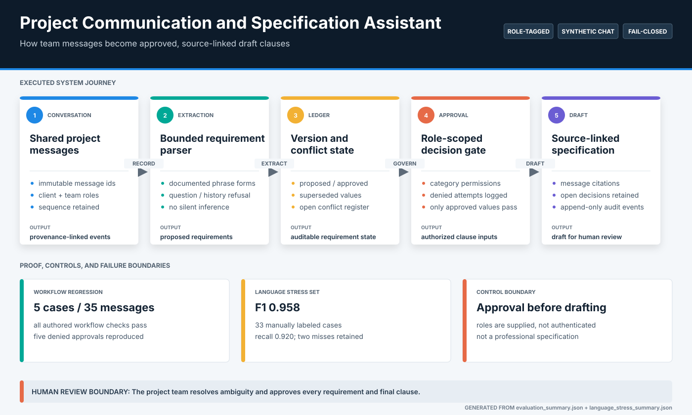
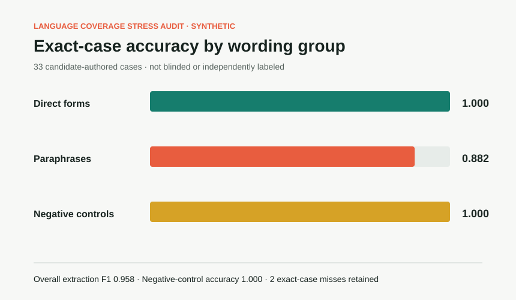

Project decisions are easily separated from their source message, current status, conflict history, and approval authority.
Selected case study / Project communication
Communication and Specification Assistant
A governed path from project conversation to source-linked draft requirements.
Role-tagged messages enter an immutable conversation record. Documented language forms become versioned requirements, conflicts stay visible, and only authorized approvals can produce cited draft clauses.
Actual local interface / synthetic conversation data
Immutable message IDs, deterministic extraction, requirement lifecycle, conflict detection, role gates, SQLite audit events, and cited draft clauses.
Five synthetic conversations with 35 messages, plus 33 manually labeled language stress cases that retain two known misses.
Documented phrase coverage only. No open-domain chat, authenticated identity, professional specification, or stakeholder acceptance evidence.
System
Approval changes state; conversation alone does not
The ledger separates what was said, what was extracted, what conflicts, and what has been approved. A clause is generated only from an active requirement with a permitted approval event and a source-message reference.

Measured behavior
The stress set exposes where documented language coverage stops
Perfect workflow-fixture results show deterministic regression consistency. The separate language set is the more useful boundary check because it includes paraphrases, negative controls, and retained failures.


Engineering decisions
Governance is modeled as data, not prompt wording
The implementation keeps provenance and state transitions inspectable instead of asking a language model to imply authority or silently reconcile conflicting instructions.
Immutable message identity
Every extracted value and draft clause points back to a stable message ID, sequence, role, and timestamp.
Versioned requirement state
Proposed, approved, superseded, and conflicting requirements remain distinct records rather than one mutable summary.
Fail-closed approval gates
Category-specific role permissions reject unauthorized approvals and record the denial without changing the clause set.
Auditable abstention
Questions, rejected values, historical references, unsupported chatter, and unresolved conflicts remain outside the approved draft.
Retained failure
Number words fall outside the current extraction grammar.
The fixed stress set misses "four thousand two hundred square metres" and "a dozen consultation rooms." These failures are checked in because the project does not claim open-domain understanding or silently infer unsupported values.
Inspect retained failuresRun locally
Replay the workflow and language audit
The evaluator rebuilds the workflow regression, source-linked trace, stress metrics, retained-failure report, and visual comparison from bundled synthetic fixtures.
python projects/project-specification-copilot/evaluate_specification.py
python -m pytest tests/test_project_specification_copilot.py
streamlit run projects/project-specification-copilot/app.py